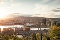
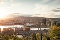
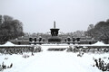
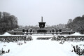
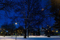
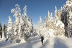
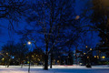
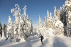

Multimédia
Nesta página encontra conteúdos multimédia.
Fotografias

 

 

 



Vídeo
Poema
Entre fiordes de espelho sereno,
Oslo respira o sopro do norte.
As ruas dançam sob o inverno,
Mas no verão, ganham nova sorte.
Florestas abraçam a cidade,
Verde e neve em doce união.
Barcos deslizam com suavidade,
Rompendo o azul em contemplação.
No silêncio, a história repousa,
Vikings, reis e lendas do mar.
Oslo é calma, é força, é coisa
Que faz a alma se demorar.